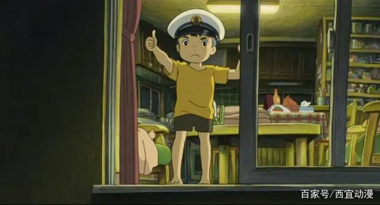
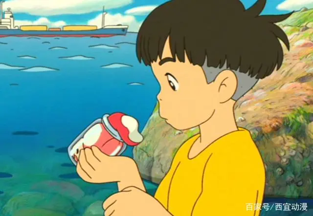
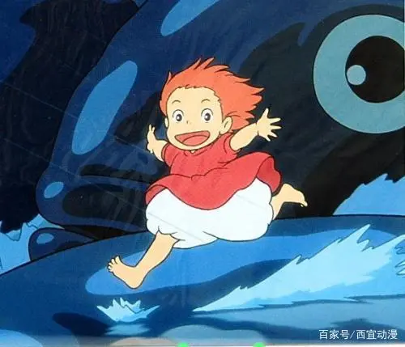

文丨guoxinye
#动漫八卦#今日我们动漫八卦听闻某动漫世界有着一件怪事，一个名叫宗介的小朋友有着一位金鱼朋友。接下来跟我们一起去了解这一奇闻异事！
这一位就是我们的宗介小朋友，我们这边大概介绍一下小宗介的家庭情况：五岁的宗介和妈妈住在我们这个靠海小村庄的山崖上。由于宗介爸爸是一位船长，长时间不在家，只留下宗介与妈妈相依为命。好在小宗介极其懂事，知道自己应该代替爸爸好好照顾妈妈。
 小船长宗介通过我们与小宗介的聊天，我们知道了宗介的那位金鱼朋友的名字——波妞。听小宗介说，他是在山崖下岩石遍布的沙滩上玩耍的时候，才遇到的波妞。那时的波妞被困在玻璃瓶里，小宗介将波妞从玻璃瓶里救出，并且将它养在水桶里。
 宗介与波妞的第一次见面宗介与波妞这一次的相处并不长，但也不难看出宗介是一个好男孩，对波妞爱护有加。但由于波妞的身份，还是被抓回了大海！
被抓回大海的波妞一直想念着宗介，而宗介也一直在想念着波妞，或许这便是最为纯真的感情了！
听宗介说，波妞最后是在妹妹的帮助下才逃了出来，并且变为了人类，当时小宗介还没认出波妞来呢！
 变为人类的波妞就这样，我们的小宗介和小波妞开始了波妞的人类生活。宗介教会了波妞很多东西，比如吃饭、拿勺子等等！